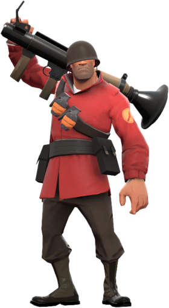

Marketplaces
You Can Visit:
Marketplace.tf Tradeit.gg Skinport.com backpack.tfTeam Fortress 2 has transcended the gaming realm, transforming in-game items into real-world assets. The Mann-Conomy Update in 2010 paved the way for a vibrant TF2 item economy, where players can buy, sell, and trade items on dedicated platforms.
TF2 Marketplace
Websites like Marketplace.tf and Scrap.tf serve as virtual marketplaces, allowing players to convert their TF2 items into actual currency. The prices are influenced by rarity, demand, and overall popularity, creating opportunities for players to earn real money.
Rare Finds and Unusual Profits
Certain items, such as "Unusual" hats with unique effects, can be highly lucrative. The TF2 item marketplace is dynamic, with trends shifting based on game updates, community events, and player preferences.
